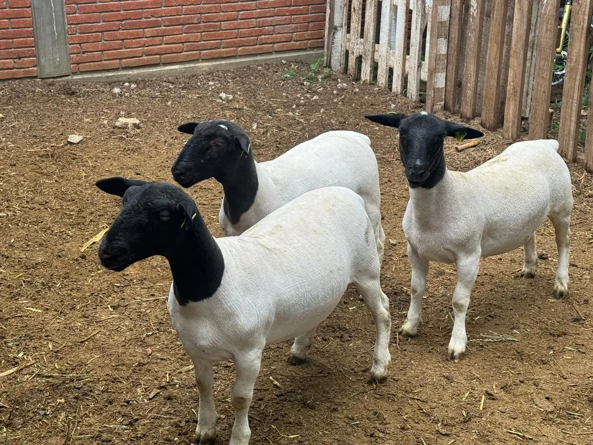

Transfiera el conocimiento práctico y la experiencia de manos oaxaqueñas expertas para mejorar su propia operación ganadera. Ofrecemos programas de capacitación prácticos y directos en Santa María Atzompa.

Nuestra Genética de Vanguardia
En Santa María Atzompa, Oaxaca, no solo criamos ovinos; cultivamos el futuro de la ganadería. Nuestra sección de genética representa la cúspide de nuestro esfuerzo, donde la tradición de las manos oaxaqueñas se une a la selección técnica más exigente para ofrecerle animales con un potencial genético superior, criados de la manera más natural posible.